Overview
ProcessMaker 3 is available by default in English, but translation files for additional languages can be installed.
Recommendations
- If ProcessMaker has been upgraded the translation file doesn't upgrade with the latest version so it must be downloaded from ProcessMaker Sourceforge page and upload it in ProcessMaker.
- After upgrading a language, it is recommended to clear ProcessMaker's Compiled Cache and also refresh the web browser.
Installing Additional Translations
To install additional languages in ProcessMaker 3, download your language from the list in the table below. Find the PO translation file for your language and click on its link to download it to your hard drive.
Available Languages for ProcessMaker:
- Available language files for version 3.2
- Available language files for version 3.1
- Available language files for version 3.0
ProcessMaker 3 supports country identifiers, so the country can be specified in the language code. For example, Chinese from Mainland China (zh-CN) can be distinguished from Traditional Chinese (zh) used in Taiwan. If a translation file is installed with the country code, then that country's flag will be displayed in the list of available languages and that country code will need to specified in the URL to change the language.
After downloading the translation file, then login to ProcessMaker as the "admin" user (or any user with the PM_SETUP_ADVANCE permission in their role). Go to Admin > Settings > Language.
Note: From version 3.0.1.8. on, users must have the PM_SETUP_LANGUAGE permission assigned to their role to access the ADMIN > Settings > Language option.

A list of installed languages will be displayed on the right side of the screen.
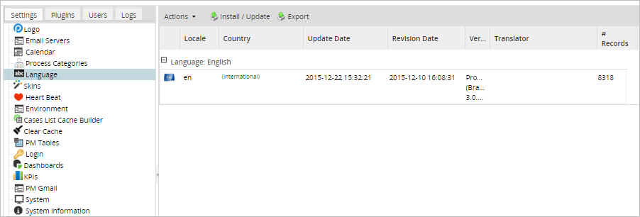
To import a new language, click on the Install / Update button at the top of the list of languages.

A window will be displayed to upload a new file with the proper extension. Click on the folder icon to look for the file within your computer.

Once the .po translation file has been uploaded it will look like the image below. ProcessMaker will accept either normal po files or po files which are compressed with gzip
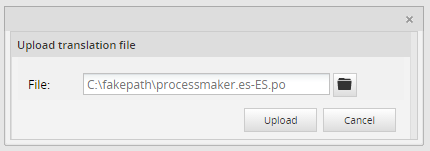
Then, click on the "Upload" button to upload the translations and insert them in the wf_<WORKSPACE>.TRANSLATION table.
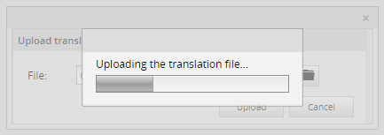
When done, a message box will indicate how many translation phrases were successfully imported (first image) and if not correct, how many of them have failed (second image).

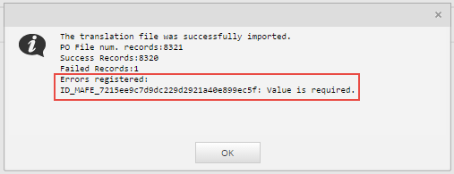
The new language recently updated should now appear in the list of installed languages as seen in the image below.
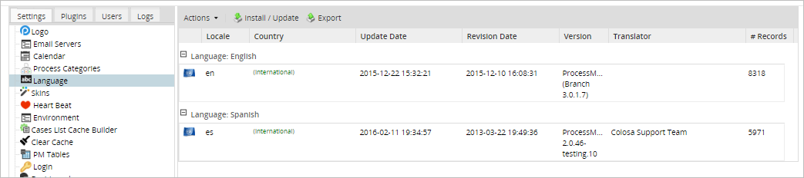
Note: To add a new translation to ProcessMaker or update an existing translation, see Translating ProcessMaker.
When a .po file is successfully updated but it has failed records as seen in the image below then the following window will be displayed.
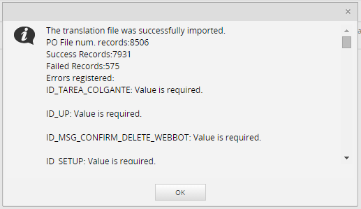
Available Version: 3.0.1.8
Scroll down to check the errors in the uploaded file and correct them if possible.
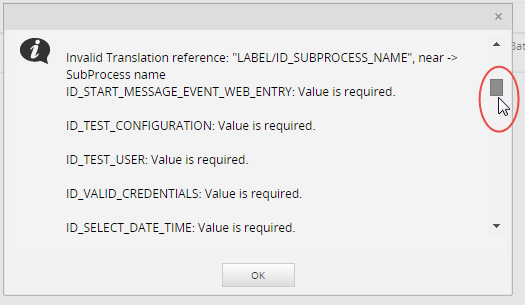
After checking the failed records and taking note of them click on the "Ok" button to close this window.
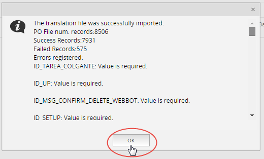
Changing to a Language
Once a language has been added to the system, the user can change the language by going to the ProcessMaker login screen and selecting it from from the "Language" dropdown box as seen in the image below.
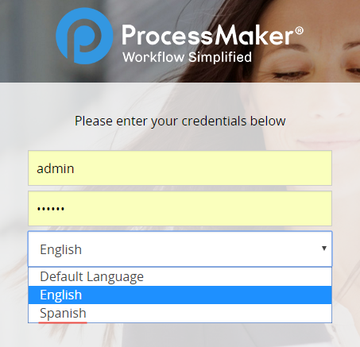
Take into consideration that it is not necessary to logout and login just to change the language of the ProcessMaker interface. At any time, the user can simply edit the language code in the URL. To do so, go to the web browser's location bar and edit the URL. Then, refresh the web browser screen by pressing ENTER in the location bar or pressing CTL+R, so the new language will be displayed.
For example, go to the URL and change the "en" (which means English)
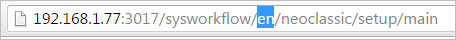
Change the "en" for the language that was uploaded which is Spanish (es) and press the ENTER key.
http://example.com/sysworkflow/en/classic/cases/main

Once clicked the whole interface language will change completely.
http://example.com/sysworkflow/es/classic/cases/main
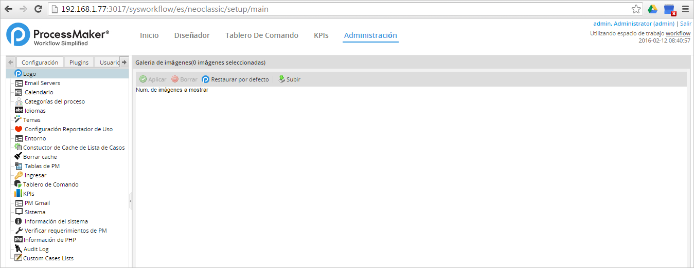
Note: The language that is chosen in the dropdown when login in is set for the whole interface.
Right-to-Left Language Support
Available Version: From ProcessMaker 3.0.2 on.
ProcessMaker supports right-to-left functionality for languages that work in a right-to-left environment such as Hebrew, Arabic, Urdu, etc.
This feature applies to:
- Dynaforms:
- While running cases.
- In Preview mode
It does NOT apply:
- The Form Designer
- Mobile forms
| Warning: ProcessMaker does NOT support variables created with characters from Arabic, Hindi, Japanese or other languages that do not use the Latin alphabet. |
To activate this functionality, install the translation file (.po) for the RTL language and select the language when logging in into ProcessMaker.
| Note: Remember to clear the browser's cache after switching from an LTR language to an RTL one. |
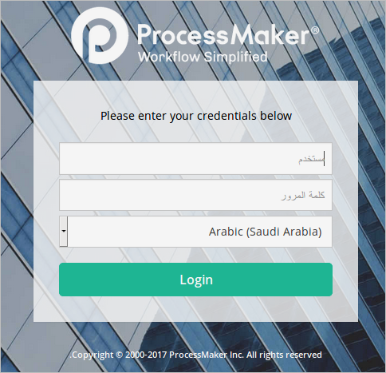
The content of the ProcessMaker layout will change to support the right-to-left orientation. This include entering, editing, and displaying the Dynaform's text. For example, if installing the translation file for Arabic, Processmaker will look like:
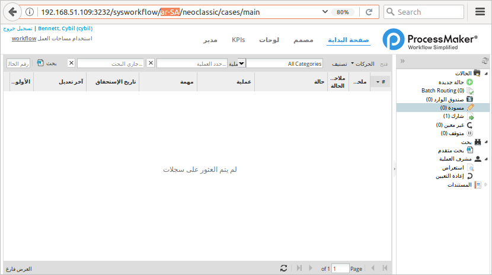
Notice that the language selected is specified in the URL.
Moreover, the DynaForm interface will display reverse text and if there is a .po customized for the current Dynaform in Arabic language it will be automatically selected.

The user will be able to write from the right and continue to the left in each one of the fields contained in a DynaForm.

Consideration with Arabic Symbols
Consider that numbers and alphabetic characters of the arabic language are treated as symbols in ProcessMaker. Therefore, if they are used in conditions for example, the process will evaluate the condition correctly but a PHP notice will be displayed.
Changing the Default Language
The default language is the language listed in the first place in the Language dropdown of the login screen. This language is also applied directly when the domain is entered (e.g. http://127.0.0.1:8081), the system reads the configuration and redirects to the ProcessMaker link with the default language (e.g. http://127.0.0.1:8081/sys/en/neoclassic/login/login).
To change the default language, go to Admin > Settings > Language.
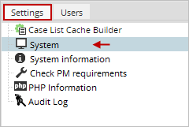
Go to the Preferences section and select the language from the Default Language dropdown.
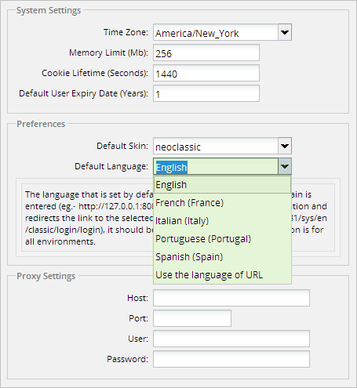
A window informing the user that it is necessary to log in again to see the changes will be displayed.
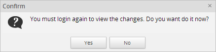
Click on Yes to go back to the login page and see that the selected language is the default selected option in the Language dropdown.
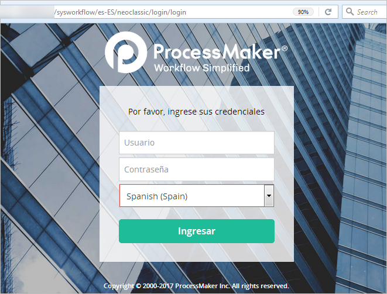
Updating Languages
The procedure to update an existing translation and import a new one is exactly the same. To update the translation for a language, download the PO translation file from ProcessMaker's SourceForge site and login to ProcessMaker as the "admin" user (or any user with the PM_SETUP_ADVANCE permission in her role). Go to ADMIN > Settings > Language and click on the Import or Update link at the top of the list and select the PO translation file to import into ProcessMaker.
All the old translation strings in the wf_<WORKSPACE>.TRANSLATION table will be overwritten and the new translation strings will be used in the ProcessMaker interface. To see the new translation, refresh the web browser screen by pressing CTL+R or by clicking on a different ProcessMaker menu.
Deleting Languages
Only languages which have not been used when designing processes may be deleted. The reason is that deleting that language would mean loosing information for a process. So before deleting a language make sure that there aren't processes using this particular language.
To delete a language from the ProcessMaker system, login into the ProcessMaker workspace where the language was originally installed. For example, if the language was originally installed in the "sales" workspace, then log into that workspace. Go to ADMIN > Settings > Language and select the language in the list by clicking on it and it will be highlighted as seen in the image below. Then, go to the "Actions" menu and select the "Remove" option.
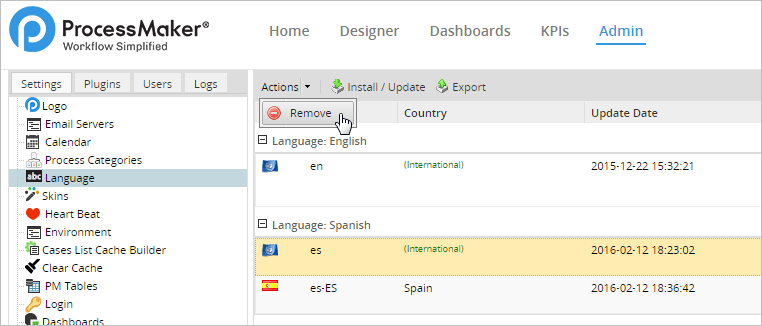
A message box will appear after clicking on the "Remove" option, confirm the deletion of the language by clicking on the "Yes" button or go back to the "Language" screen by clicking on the "No" option.
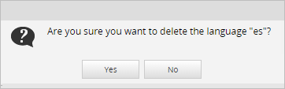
The language selected will be deleted from the ProcessMaker installation.
Note: The language used by default cannot be deleted.